정보보안기사 (2015-03-28 기출문제)
1과목: 시스템 보안
1. 다음은 스캔 도구로 유명한 Nmap의 스캔 타입을 설명한 내용이다. 보기에서 설명하는 스캔 타입은 무엇인가?
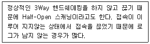
- -sX
- -sS
- -sU
- -sP
(정답률: 53%)

2. 다음 중 원격 서버의 /etc/hosts/equiv 파일에 정확한 설정이 있어야만 정상적으로 실행이 되어 신뢰받는 로그인을 할 수 있는 명령어는 무엇인가?
- telnet
- login
- rlogin
- talkd
(정답률: 91%)
3. 다음 중 비밀번호 앞 또는 뒤에 문자열을 추가하여 동일 비밀번호에 대하여 동일 다이제스트를 생성하는 해시 함수의 문제점을 보완해 주는 기술은 무엇인가?
- 0TP
- 솔트
- HMAC
- 스트레칭
(정답률: 79%)
4. 다음 중 응용 프로그램 로그에 해당되지 않는 것은?
- UNIX Syslog
- DB 로그
- 웹 로그
- FTP 로그
(정답률: 50%)
5. 다음의 취약성 점검 도구 중 NESSUS 도구로 탐지할 수 없는 것은?
- 사용할 때만 열리는 닫힌 포트
- 쿠키값
- 운영 체제 종류
- 웹 서버 취약점
(정답률: 31%)
6. 다음에서 설명하고 있는 접근 제어 정책으로 올바른 것은?
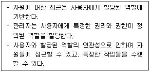
- MAC
- DAC
- RBAC
- HMAC
(정답률: 81%)
7. UNIX 시스템에서는 일반 계정의 비밀번호를 저장할 때 암호화하여 저장한다. 다음 중 어떤 알고리즘을 이용하여 저장하는가?
- DES
- RSA
- MD5
- SHA
(정답률: 52%)
8. 다음의 일반적인 보안 원칙 중 보기에 알맞은 것은?
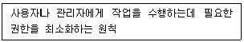
- 소프트웨어 최신 유지
- 중요 서비스에 대한 액세스 제한
- 시스템 작업 모니터링
- 최소 권한 원칙 준수
(정답률: 71%)
9. 다음 중 PAM(Pluggable Authentication Module) 에 대한 설명으로 옳지 않은 것은?
- 사용자를 인증하고 그 사용자 서비스에 대한 액세스를 제어하는 모듈화 방법이다.
- 응용 프로그램의 재컴파일이 필요하다.
- 관리자가 응용 프로그램들의 사용자 인증 방법을 선택하도록 해 준다.
- 권한을 부여하는 소프트웨어의 개발과 안전하고, 적정한 인증의 개발을 분리하려는데 있다.
(정답률: 53%)
10. 다음 중 7.7 DDoS 공격과 3.20 DDoS 공격의 공통점은 무엇인가?
- 대역폭 과부하
- 리소스 고갈
- MBR 파괴
- 금융 정보 유출
(정답률: 71%)
11. 다음의 리눅스 파일 시스템에서 SetUID, SetGID, Sticky bit 설명으로 옳은 것은?
- 파일에 SetUID가 걸려 있어도 겉으로는 알 수 없다.
- 파일에 대한 접근 권한이 7777'이면 문자로는 'rwsrwgrwt'로 표시된다.
- SetUID 비트가 세트된 파일을 실행하면 파일 소유자 권한으로 수행된다.
- SetUID 비트가 세트되어 있어도 루트 권한으로 실행되는 경우는 없다.
(정답률: 33%)
12. 다음 중 HTTP 프로토콜의 상태 코드로 올바르지 못한 것은?
- 200 ： HTTP 요청에 대해 에러 없이 성공
- 300 ： 클라이언트가 선택할 수 있는 리소스에 대한 다중 옵션 표시
- 403 ： 유효한 요청에 대한 클라이 언트가 응답 거부
- 404 ： 현재 요청한 리소스를 찾을 수 없으나 향후 요청에 대해서는 유효할 수 있음
(정답률: 45%)
13. 다음 중 루트킷에 대한 특징으로 올바르지 못한 것은?
- 트래픽이나 키스트로크 감시
- 커널 패치
- 로그 파일 수정
- 시스템 흔적 제거
(정답률: 27%)
14. 다음 시나리오의 빈칸 (가)에 알맞은 명령어는?
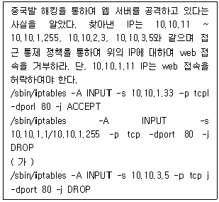
- /sbin/iptables -A INPUT -s 10.10.2.1 -p tcp -dport 80 -j DROP
- /sbin/iptables -A INPUT -s 10.10.2.2 -p tcp -dport 80 -j ACCEPT
- /sbin/iptables -A INPUT -s 10.10.2.3 -p tcp -dport 80 -j DROP
- /sbin/iptables -A INPUT -s 10.10.3.5 -p tcp -dport 80 -j ACCEPT
(정답률: 43%)
15. 다음 중 시스템에서 FTP로 어떤 파일을 주고 받았는지를 기록하는 로그는 무엇인가?
- xferlog
- last
- lastlog
- secure
(정답률: 68%)
16. 다음 중 윈도우의 패스워드 복구 시 관련이 있는 파일명은?
- Password
- SAM
- PAM
- Kernel
(정답률: 42%)
17. 다음의 보기에서 빈칸에 알맞은 용어는 무엇인가?
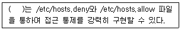
- tcp_wrapper
- tripwire
- SARA
- NESSUS
(정답률: 59%)
18. 다음 중 윈도우의 암호 정책에 포함되지 않는 것은?
- 최근 암호 기억
- 최소 암호 사용 기간
- 암호의 복잡성
- 암호 알고리즘 종류
(정답률: 65%)
19. 다음 중 취약성 점검 도구가 아닌 것은?
- nikto2
- SARA
- NESSUS
- Tripwire
(정답률: 69%)
20. 다음 중 포트 스캐닝에 대한 설명으로 올바르지 못한 것은?
- UDP 패킷을 보내어 포트가 열려 있으면 아무런 응답이 없다.
- 포트가 열려 있지 않으면 아무런 응답이 없다.
- 인가되지 않는 포트 스캐닝은 하지 말아야한다.
- 포트 정보를 수집함으로 인하여 취약점 서비스를 찾아낸다
(정답률: 48%)
2과목: 네트워크 보안
21. 다음 중 리눅스 운영 체제에서 원격 접속 방법의 하나로 평문이 아닌 암호화된 접속을 통한 안전한 접속방법을 무엇이라 하는가?
- 원격 터미널 서비스
- telnet
- rlogin
- ssh
(정답률: 60%)
22. 다음 중 가상 사설망(VPN) 프로토콜로 올바른 것은?
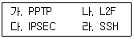
- 가
- 가, 나
- 가, 나, 다
- 가, 나, 다, 라
(정답률: 61%)
23. 다음 중 패킷 전송 시 출발지 IP 주소와 목적지 IP 주소값을 공격 대상의 IP 주소로 동일하게 만들어 공격 대상에게 보내는 것은?
- DDoS
- 세션 하이젝킹
- 스푸핑 (Spoofing)
- 랜드 (Land) 공격
(정답률: 68%)
24. 다음 중 사용자로부터 파라미터를 입력받아 동적으로 SQL Query를 만드는 웹페이지에서 임의의 SQL Ojery와 Command를 삽입하여 웹 사이트를 해킹하는 기법은?
- SQL Spoofing
- Smurf
- SQL Injection
- SQL Redirect
(정답률: 80%)
25. 다음 지문의 빈칸에 알맞은 단어는 무엇인가?
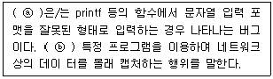
- ⓐ 포맷 스트링, ⓑ 스니핑
- ⓐ 버퍼 오버플로우, ⓑ 하이젝킹
- ⓐ 스니핑, ⓑ 버퍼 오버플로우
- ⓐ 스니핑, ⓑ 스푸핑
(정답률: 60%)
26. 다음 중 DMZ(Demilitarized Zone) 구간에 위치하고 있으면 안되는 시스템은?
- 웹서버
- 디비 서버
- 네임 서버
- FTP 서버
(정답률: 72%)
27. 다음 중 DNS Lookup 정보로 알 수 없는 것은?
- 디비 서버
- 네임 서버
- 이메일 서버
- 이메일 서버 IP
(정답률: 56%)
28. 다음 중 파일 업로드 공격의 취약점에 대한 설명으로 틀린 것은?
- 게시판 글쓰기 권한이 있는지 확인한다.
- 쉘 획득이 가능한 공격이다.
- 업로드 외에는 파일 확장자 필터가 적용되어야 한다.
- 업로드 폴더를 제거한다.
(정답률: 62%)
29. 다음 중 해킹 시 서버 수집 단계에서 하는 행동과 다른 것은?
- 서버 IP
- Smurf
- 운영 체제
- 서비스 데몬
(정답률: 38%)
30. 다음 중 괄호 안에 알맞은 용어는 무엇인가?
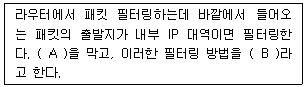
- A : ARP，B : 스푸핑
- A : IP 스푸핑，B : INGRESS
- A : 스니핑，B : INGRES
- A : 스푸핑，B : EGRESS
(정답률: 86%)
31. Ping을 이용한 공격으로 ICMP_ECHO_RE- QUEST를 보내면 서버에서 다시 클라이언트로 ICMP_ECHO_REPLY를 보낸다. 이때，출발지 주소를 속여서(공격하고자 하는) 네트워크 브로드캐스팅 주소로 ICMP_ECHO_REQUEST를 전달 할 경우 많은 트래픽을 유발시켜 공격하는 것을 무엇이라 하는가?
- 세션 하이젝킹 공격
- 브로드캐스팅 공격
- Tear Drop 공격
- Smurf 공격
(정답률: 66%)
32. 다음 중 포트 스캐닝 기술이 다른 하나는 무엇인가?
- NULL Scanning
- X-MAS Scanning
- FIN Scanning
- TCP Connect Scanning
(정답률: 58%)
33. 다음 중 NIDS에서 탐지할 수 없는 것은?
- 악성 코드가 담긴 파일
- 악성 코드가 담긴 메일
- Fragmentation
- 포트 스캔
(정답률: 6%)
34. 다음의 보기에서 설명하고 있는 웹 취약점 공격 기술은?
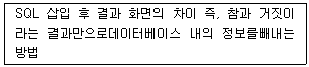
- 세션 하이잭킹
- 파일 업로드 공격
- Blind SQL Injection 공격
- XSS 공격
(정답률: 82%)
35. 다음의 보기에서 설명하고 있는 공격은?
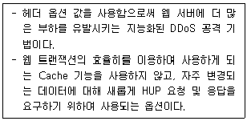
- CSRF 공격
- HTTP CC Attack
- Blind SQL Injection 공격
- XSS 공격
(정답률: 44%)
36. 다음 중 네트워크의 공격 대응 방법으로 올바르지 못한 것은?
- Ping of Death 공격은 UDP를 차단한다.
- Syn Flooding 공격은 최신 패치를 한다.
- 스니핑 공격을 SSL 암호화 프로토콜 사용으로 패킷을 보호한다.
- DDoS 공격은 적절한 라우팅 설정 및 Null 처리를 한다.
(정답률: 41%)
37. 다음 중 네트워크 접속 사용자 또는 단말기를 등록하거나 인증하고, 미인가 사용자 및 단말기 네트워크를 차단하는 솔루션은 무엇인가?
- NAC
- ESM
- SSO
- EAM
(정답률: 65%)
38. 공격자는 공격 대상 서버에 파일을 업로드한 후에 웹을 이용하여 시스템 명령어를 수행하므로 네트워크 방화벽 등의 영향력을 받지 않고 서버를 제어할 수 있는 공격 기술을 무엇이라 하는가?
- SQL 인젝션
- 파일 업로드
- XSS
- 웹 쉘
(정답률: 52%)
39. 다음의 보기에서 설명하고 있는 기술은?
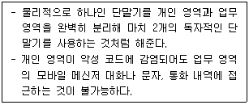
- MAM
- MDM
- 모바일 가상화
- WIPS
(정답률: 77%)
40. 다음의 TCP Flag 중에서 연결 시작을 나타내기 위해 사용하는 Flag는 무엇인가?
- FIN
- SYN
- ACK
- RST
(정답률: 91%)
3과목: 어플리케이션 보안
41. 다음 중 DNSSEC로 방어가 가능한 최신 보안 이슈는 무엇인가?
- 피싱
- 파밍
- 스미싱
- 큐싱
(정답률: 59%)
42. 다음 중 인간의 감지 능력으로는 검출할 수 없도록 사용자 정보를 멀티미디어 콘텐츠에 삽입하는 기술을 무엇이라 하는가?
- 핑거 프린팅(Digital Fingerprinting)
- 워터 마킹(Water Marking)
- 포렌식 마킹(Forensic Marking)
- 태그 마킹(Tag Marking)
(정답률: 59%)
43. 다음의 보기에서 설명하고 있는 프로토콜은?
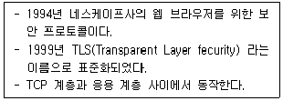
- HTTP
- SSL
- HTTPS
- SET
(정답률: 79%)
44. 다음 중 디비(DB) 보안에 해당하지 않는 것은?
- 흐름 통제
- 추론 통제
- 접근 통제
- Aggregation
(정답률: 79%)
45. 다음 중 SCT 프로토콜에 대한 특징으로 올바르지 못한 것은?
- 전자상거래 사기를 방지한다.
- 구현이 용이하다.
- 기존 신용 카드 기반 그대로 활용이 가능하다.
- 상점에 대한 인증을 할 수 있다.
(정답률: 40%)
46. 다음의 보기에서 설명하고 있는 프로토콜은?
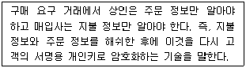
- 블라인드 서명
- 이중 서명
- 은닉 서명
- 전자 봉투
(정답률: 81%)
47. 다음의 SSL 핸드쉐이킹 과정 중 보기에서 설명 하고 있는 과정은 어느 단계인가?
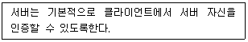
- Hello Request
- Client Hello
- Certificate Request
- Client Certificate
(정답률: 39%)
48. 다음의 보기에서 설명하고 있는 전자 투표 방식은?
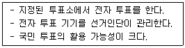
- PSEV
- 키오스크
- LKR
- REV
(정답률: 30%)
49. 다음 중 전자 서명의 특징에 포함되지 않는 것은?
- 위조 불가
- 부인 불가
- 서명자 인증
- 재사용 가능
(정답률: 83%)
50. 다음 중 파일 업로드 공격 취약점의 대응 방법으로 올바르지 못한 것은?
- 첨부 파일에 대한 검사는 반드시 클라이언트 측에서 스크립트로 구현한다.
- 첨부 파일을 체크하여 특정 종류의 파일만 첨부한다.
- 파일 업로드 시에 실행 파일은 파일 첨부를 불가능하게 한다.
- 임시 디렉토리에서 업로드된 파일을 지우거나 다른 곳으로 이동한다
(정답률: 35%)
51. 다음 중 PGP에 대한 설명으로 올바르지 못한 것은?
- 이메일 어플리케이션에 플러그인으로 사용이 가능하다.
- 공개키 서버와 연결되어 공개키 분배 및 취득이 어렵다.
- 메뉴 방식을 통한 기능 등에 쉽게 접근이 가능하다.
- 필 짐버만이 독자적으로 개발하였다.
(정답률: 56%)
52. 검증되지 않는 외부 입력값에 의해 웹 브라우저에서 악의적인 코드가 실행되는 보안 취약점을 무엇이라 하는가?
- SQL 삽입
- XSS
- 부적절한 인가
- LDAP 삽입
(정답률: 61%)
53. 다음 중 네트워크형 전자 화폐에 포함되지 않는 것은?
- Mondex
- Ecash
- Netcash
- Payme
(정답률: 31%)
54. 다음 중 전자 입찰 시 요구되는 보안 사항에 포함되지 않는 것은?
- 비밀성
- 무결성
- 공개성
- 독립성
(정답률: 73%)
55. 다음 중 전자상거래 프로토콜인 SET의 구성 요소에 포함되지 않는 것은?
- 상점
- 고객
- 매입사
- 등록기관
(정답률: 35%)
56. DRM의 세부 기술 중에서 다음 보기에 해당하는 것은?
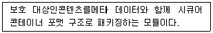
- 식별자
- 메타데이터
- 패키져
- 콘텐츠
(정답률: 73%)
57. 다음은 에러 로그 위험도를 8가지로 분류하여 높은 에러에서 낮은 에러로 표시한 것이다. 빈 곳에 알맞은 용어는?
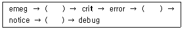
- alert, warn, info
- info, alert, warn
- warn, info, alert
- alert, info, warn
(정답률: 44%)
58. 다음 중 전자 우편 프로토콜과 관련성이 적은 것은?
- MDM
- MUA
- MDA
- MRA
(정답률: 62%)
59. 다음 중 전자 입찰의 문제점으로 올바르지 못한 것은?
- 입찰자와 입찰 공고자의 정보는 공개 네트 워크를 통하여 서버로 전송, 수신된다.
- 입찰자와 서버 사이에 서로 공모할 가능성이 있다.
- 서버가 입찰자의 정보 또는 입찰 공고자 정보를 단독으로 처리하여 신뢰성이 높다.
- 입찰자들이 입찰가에 대한담합을통하여 서로 공모할 가능성이 있다.
(정답률: 69%)
60. 다음 중 전자 화폐의 요구 조건이 아닌 것은?
- 교환성
- 익명성
- 추적성
- 인식 가능성
(정답률: 48%)
4과목: 정보 보안 일반
61. 다음의 블록 암호 알고리즘 운영 방식 중에서 가장 단순하면서 권장하지 않는 방식은 무엇인가?
- ECC
- CBC
- OFB
- ECB
(정답률: 44%)
62. 다음 중 공인인증서 내용에 포함되지 않는 것은?
- 발행자
- 유효 기간
- 비밀번호
- 공개키정보
(정답률: 65%)
63. 다음 중 블록 암호 알고리즘의 하나인 DES 공격 방법으로 알맞은 것은?
- 선형 공격
- 블록 공격
- 전수공격
- 비선형공격
(정답률: 29%)
64. 다음 중 암호문으로부터 평문의 어떤 부분 정보도 노출되지 않는 암호 방식이며, 인수 분해 문제와 제곱 잉여의 원리를 이용하여 확률 암호를 정의한 것은?
- Elgamal
- Goldwasser-Micali
- Diffi-Hellman
- Massey-Omura
(정답률: 52%)
65. 다음 중 능동적 공격에 포함되지 않는 것은?
- 도청
- 삽입
- 삭제
- 재생
(정답률: 61%)
66. 다음에서 설명하고 있는 프로토콜은 무엇인가?
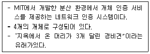
- KDC
- Kerberos
- PPP
- ECC
(정답률: 83%)
67. 다음 중 디바이스 인증 기술에 포함되지 않는 것은?
- 아이디 패스워드 인증
- 암호 프로토콜 인증
- 시도 응답 인증
- 커버로스
(정답률: 53%)
68. 다음 중 싱글사인온(SSO)은 한 번의 인증 과정으로 여러 컴퓨터상의 자원을 이용 가능하게 하는 인증 기능이다. 대표적인 인증 프로토콜은 무 엇인가?
- BYOD
- KDC
- Kerberos
- PAP
(정답률: 60%)
69. 다음 중 알고 있는 것에 기반한 사용자 인증 기술은 무엇인가?
- 핀 번호
- 스마트 카드
- 홍채
- 목소리
(정답률: 70%)
70. 다음 중 메시지 출처 인증 기술 중에 ( ) 안에 들 어갈 기술은 무엇인가?
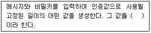
- 디지털서명
- 해시 함수
- 메시지 인증 코드(MAC)
- 메시지 암호화
(정답률: 62%)
71. 다음 중 메시지 인증 코드(MAC)에 대한 설명으로 올바르지 못한 것은?
- 송신자와 수신자가 서로 동일한 공개키를 가지고 메시지를 대조한다.
- 송신자를 보증하는 디지털 서명을 지원하지 않는다.
- 송신자와 수신자 사이에 메시지 무결성을 보장한다.
- 송신자 인증에 사용된다.
(정답률: 34%)
72. 다음 중 X509v2의 설명으로 올바르지 못한 것은?
- 인증서 취소 목록을 도입하였다.
- 주체 고유 식별자를 사용하였다.
- 인증기관 고유 ID를 도입하였다.
- 확장자 개념이 도입되었다.
(정답률: 25%)
73. 다음의 보기에서 설명하고 있는 블록 암호 공격은 무엇인가?
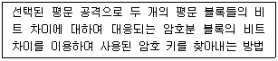
- 선형 공격
- 차분공격
- 전수공격
- 수학적 분석
(정답률: 53%)
74. 다음의 보기에서 설명하고 있는 암호 알고리즘은 무엇인가?
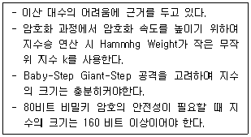
- DES
- RSA
- El Gamal
- ECC
(정답률: 53%)
75. 사용자는 특정 작업 또는 세션 동안 한번 사용하기 위해 키를 생성할 수 있다. 이를 무엇이라 하는가?
- 공개키
- 비밀키
- 세션키
- 암호키
(정답률: 81%)
76. 다음 중 2 Factor 요소로 올바르게 짝지은 것은?
- 홍채-지문
- PIN-USB 토큰
- 패스워드-PIN
- 스마트 카드-토큰
(정답률: 64%)
77. 다음 중 비대칭키에 대한 설명으로 올바르지 못한 것은?
- 키 분배가 용이하다.
- 확장 가능성이 높다.
- 암/복호화 처리 시간이 빠르다.
- 복잡한 키 관리 구조를 가지고 있다.
(정답률: 62%)
78. 다음 보기의 역할을 하는 PKI 구성 요소는 무 엇인가?
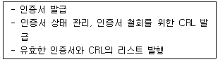
- CA
- RA
- CRL
- PCA
(정답률: 63%)
79. 다음 중 보기에서 설명하고 있는 접근 통제 모델은 무엇인가?
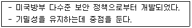
- 비바 모델
- 클락 - 윌슨 모델
- 벨 - 라파듈라 모델
- 제한 인터페이스 모델
(정답률: 75%)
80. 다음 중 이산 대수에 기반한 암호 알고리즘이 아닌 것은?
- KCDSA
- Diffie-Hellman
- El Gamal
- RSA
(정답률: 60%)
5과목: 정보보안 관리 및 법규
81. 다음 중 국제 공통 보안 평가 기준을 나타내는 것은?
- TCSEC
- ITSEC
- CC
- 오렌지북
(정답률: 47%)
82. 다음 중 정성적 위험 분석에 포함되지 않는 것은?
- 객관적인 평가 기준이 적용된다.
- 위험 분석 과정이 지극히 주관적이다.
- 계산에 대한 노력이 적게 든다.
- 측정 결과를 화폐로 표현하기 어렵다.
(정답률: 62%)
83. 다음 중 기업(조직)이 각종 위협으로부터 주요 정보 자산을 보호하기 위해 수립, 관리, 운영하는 종합적인 체계의 적합성에 대해 인증을 부여하는 제도를 무엇이라 하는가?
- TCSEC
- ITSEC
- CC
- ISMS
(정답률: 37%)
84. 다음 재난 복구 계획 중 서버와 단말기까지 모든 컴퓨터 설비를 완전히 갖추고, 실제로 운영되 는 환경과 동일한 상태로 지속 관리되는 사이트는 무엇인가?
- 웜사이트
- 핫사이트
- 콜드사이트
- 상호 지원계약
(정답률: 45%)
85. 다음 중 '정보통신망 이용 촉진 및 정보보호 등에 관한 법률'에서 정의하는 용어 설명으로 올바르지 못한 것은?
- 사용자 : 정보통신서비스 제공자가 제공하는 정보통신서비스를 이용하는 자를 말한다.
- 정보통신서비스 : '전기통신사업법' 제2조 6호에 따른 전기 통신 역무와 이를 이용하여 정보를 제공하거나 정보의 제공을 매개하는 것을 말한다.
- 정보통신서비스 제공자 : '전기통신사업법' 제2조 8호에 따른 전기통신사업자와 비영리를 목적으로 전기통신사업자의 전기통신 역무를 이용하여 정보를 제공하거나 정보의 제공을 매개하는 자를 말한다.
- 개인정보 : 생존하는 개인에 관한 정보로서 성명, 주민등록번호 등에 의하여 특정한 개인을 알아볼 수 있는 부호, 문자, 음성, 음향 및 영상 등의 정보를 말한다.
(정답률: 16%)
86. 다음 중 개인정보 유출로 인하여 과태료를 지불해야 할 상황에 맞는 위험 대응 전략은 무엇인가?
- 위험회피
- 위험 전가
- 위험 수용
- 위험 감소
(정답률: 14%)
87. 다음 중 정보보호 관리 체계(ISMS) 의무 인증 대상에 포함되지 않는 것은?
- 서울 및 모든 광역시에서 정보통신망 서비스 제공
- 정보통신 서비스 부문 전년도 매줄액 100억 이상
- 전년도말 기준 직전 3개월간 일일 평균 이용 자 수 100만명 이상 사업자
- 매출액 100억 이하인 영세 VIDC
(정답률: 50%)
88. 다음 중 개인정보 이용 및 수집에서 정보 주체의 별도 동의를 받지 않아도 되는 것은?
- 외국인등록번호
- 병력
- 운전자면허번호
- 휴대폰 번호
(정답률: 39%)
89. 다음 중 주요 정보통신 기반 시설 보호 계획의 수립에 포함되지 않는 것은?
- 주요 정보통신 기반 시설의 침해 사고에 대한 예방 및 복구 대책에 관한 사항
- 주요 정보통신 기반 시설의 취약점 분석, 평가에 관한 사항
- 그 밖에 주요 정보통신 기반 시설의 보호에 관하여 필요한 사항
- 주요 정보통신 기반 시설 보호 대책 이행 여부의 확인 절차
(정답률: 43%)
90. 다음 중 주요 정보통신 기반 시설 보호 지원에 포함되지 않는 것은?
- 도로, 철도
- 인터넷 포털
- 교통 정보
- 도시, 가스
(정답률: 46%)
91. 금융 업무를 보지 못하여 물건 결제를 하지 못하였다면 보안의 목적 중 무엇을 충족하지 못하였는가?
- 기밀성
- 가용성
- 무결성
- 부인 방지
(정답률: 61%)
92. 다음 중 개인정보보호, 정보보호 교육에 대한 설명으로 올바르지 못한 것은?
- 개인정보보호법에 따라 연 정기적으로 개인 정보보호 교육을 의무적으로 한다.
- 정보보호 교육 시 자회사 직원만 교육하고 협력사는 제외한다.
- 정보통신망법에 따라 연 2회 이상 개인정보 교육을 의무적으로 한다.
- 개인정보보호, 정보보호에 대한 교육은 수준별, 대상별로 나누어 교육한다.
(정답률: 44%)
93. 다음 중 개인정보 이용 및 수집 시 동의 없이 처리할 수 있는 개인정보라는 입증 책임은 누구에게 있는가?
- 개인정보 처리자
- 개인정보보호 책임자
- 개인정보 담당자
- 개인정보 취급자
(정답률: 47%)
94. 다음 중 전자서명법상 용어의 설명으로 올바르지 못한 것은?
- “전자서명”이라 함은 서명자를 확인하고 서명자가 당해 전자문서에 서명을 하였음을 나타내는데 이용하기 위하여 당해 전자문서에 첨부되거나 논리적으로 결합된 전자적 형태의 정보를 말한다.
- “전자문서”라 함은 정보처리시스템에 의하여 전자적 형태로 작성되어 송신 또는 수신되거나 저장된 정보를 말한다.
- “인증”이라 함은 전자서명 생성 정보가 가입자에게 유일하게 속한다는 사실을 확인하고 이를 증명하는 행위를 말한다.
- “인증서”라 함은 전자서명 검증 정보가 가입자에게 유일하게 속한다는 사실 등을 확인하고 이를 증명하는 전자적 정보를 말한다.
(정답률: 25%)
95. 개인정보 수집 시 정보 주체의 동의를 얻어야 한다. 다음 중 포함되지 않는 사항은?
- 개인정보 수집 목적
- 개인정보 수집 항목
- 개인정보 보유 기간
- 개인정보 파기 방법
(정답률: 41%)
96. 업무 연속성 관리 단계 중 다음의 보기와 같은 내용을 수행하는 단계는?
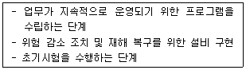
- 전략 수립 단계
- 운영 단계
- 계획 단계
- 구현 단계
(정답률: 12%)
97. 다음 중 정보보호 예방 대책을 관리적 예방 대책과 기술적 예방 대책으로 나누어 볼 때 관리적 예방 대책에 속하는 것은?
- 고유 식별 정보의 암호화
- 로그 기록 보관
- 운영 체제 패치
- 문서 처리 순서의 표준화
(정답률: 37%)
98. 다음 중 정보통신망법에 의하여 개인정보를 제3자에게 제공하기 위하여 동의를 받는 경우에 이용자에게 알려야 하는 사항이 아닌 것은?
- 개인정보의 제공 계약의 내용
- 개인정보를 제공 받는 자
- 제공하는 개인정보의 항목
- 개인정보를 제공 받는 자의 개인정보 이용 목적
(정답률: 34%)
99. 다음 중 OECD의 개인정보 8원칙에 포함되지 않는 것은?
- 정보 정확성의 원칙
- 안전 보호의 원칙
- 이용 제한의 원칙
- 비밀의 원칙
(정답률: 28%)
100. 다음 중 정보보호 정책에 포함되지 않아도 되는 것은?
- 자산의 분류
- 비인가자의 접근 원칙
- 법 준거성
- 기업 보안 문화
(정답률: 29%)